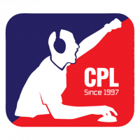

L’E-sport consiste à pratiquer le jeu vidéo sur internet ou en réseau local (LAN). Il désigne la pratique en compétition de jeux vidéo. Les joueurs s’affrontent seul ou en équipe. Le phénomène rassemble des millions de fans à travers le monde.
L’E-sport est la contraction du terme anglais “electronic sport” qui signifie littéralement “sport électronique”. Il a explosé ces dernières années, notamment avec l’organisation fréquente de tournois amateurs et professionnels. Ils ont lieu en ligne ou lors d’événements de plus en plus importants et spectaculaires.
Qu’est-ce que l’e-sport ?
À la frontière du sport et des jeux vidéo en réseau, l’E-sport prend une ampleur phénoménale. Avec plus de cent millions de joueurs mensuels, des joueurs gagnants près de 25 000 euros par mois, une plateforme de diffusion rachetée un milliard de dollars par Amazon, l’E-sport se fait petit à petit une place de plus en plus grande au quotidien.
Histoire de l'e-sport :
Les prémices des compétions d’esport apparaissent dans les années 70 aux Etats-Unis sous une forme qui existe encore aujourd’hui : les LAN (Local Area Network) parties. Ces événements rassemblent des dizaines de joueurs de jeux vidéo afin de les faire s’affronter via un réseau local.
Dans les années 80, les compétitions se multiplient mais c’est l’arrivée d’Internet à la fin des années 90 qui va bousculer l’écosystème.
 Sous l’impulsion de la Cyberathlete Professional League (CPL) crée en 1997, les tournois se professionnalisent mais surtout se mondialisent.
La même année, le tournoi Red Annihilation fait s’affronter 2 000 participants sur le jeu Quake à travers le monde pour ensuite réunir les 16 finalistes au World Congress Center de l’E3 (Electronic Entertainement Expo). Il est considéré par beaucoup comme la 1ère compétition d’esport.
Durant les années 2000, les tournois prospèrent, le nombre de joueurs et les gains augmentent, la popularité grandit et les premiers sponsors apparaissent.
Et en 2011, le lancement de Twitch va donner à l’esport une visibilité qu’il n’aurait jamais pu imaginer. La plateforme permet de diffuser en permanent des contenus, principalement ceux issus de l’univers des jeux vidéo. Les tournois sont dorénavant diffusés mondialement, et touche une audience bien plus large que celle des joueurs de jeux vidéo ou des fans. Des jeux comme Defense of the Ancient 2 (Dota 2) ou League of Légends (LoL) attirent rapidement les spectateurs, amenant des millions de vues uniques sur Twitch.
Depuis, les records se succèdent tant en termes de spectateurs qu’en termes de gains.
En 2018, la finale du championnat du monde League of Legends a été regardée par plus de 99 millions de spectateurs uniques (presque autant que le Superbowl !).
Les principaux jeux :
On distingue historiquement 8 grandes catégories qui regroupent les jeux vidéo compétitifs :
- Les RTS (jeux de Stratégie en Temps Réel)
- Les MOBA (jeux de type arène de bataille en ligne)
- Les FPS (jeux de tir à la 1ère personne)
- Les jeux de combats
- Les jeux de sport ou de course
- Les jeux Battle Royale
- Les jeux de cartes à collectionner
- Les autres
Toutes ne connaissent pas le même succès, et au sein d’une même catégorie tous les jeux ne connaissent pas le même retentissement médiatique, ou la même popularité.
L’E-sport en France :
En France, l’E-sport se développe à partir des années 2010. Cette évolution se fait notamment grâce aux tournois nationaux comme la E-Ligue 1. Elle consiste à représenter son club favori de ligue 1 sur FIFA.
En France, le nombre de spectateurs de compétition de E-sport était de 1,4 millions en 2016.
Les joueurs professionnels, ou « pro-gamers » en anglais, sont des personnes qui gagnent leur vie en jouant à des jeux vidéo. Seuls ou en équipe, les joueurs professionnels s’entraînent régulièrement à un jeu spécifique pour être au meilleur niveau. Les joueurs professionnels participent à des LAN aux 4 coins du monde. En cas de victoire, ils gagnent une somme d’argent importante. Au delà de l’aspect lucratif, ils gagnent aussi en réputation. Un aspect qui peut intéresser les sponsors et les autres équipes.
Comme pour les retransmissions télévisées de sport « traditionnel », l’E-sport possède des commentateurs pendant les matchs en cours ou pour un évènement en temps réel. Ces personnes sont douées pour commenter avec précision les actions des joueurs durant les moments forts des parties. Ils sont similaires aux commentateurs sportifs de par leurs rôles et leurs fonctions.
Qui pratique l’e-sport ?
L’E-sport est accessible à tous et sur tous les supports, chez soi devant sa console, son ordinateur, lors d’événements e-sportifs, mais aussi sur smartphone ou tablette. Les jeux vidéo compétitifs sont nombreux et variés, dans leur style et dans la difficulté de prise en main. Mais l’essor de l’E-sport et la multiplication de tournois aux récompenses de plus en plus importantes ont amené à la création d’équipes semi-professionnelles et professionnelles.
Imitant les structures sportives, les équipes regroupent des joueurs sur un ou plusieurs jeux, ainsi que des coachs, des analystes stratégiques, et même des commentateurs pour la retransmission des matchs en direct. Elles sont sponsorisées par des marques informatiques, comme Intel ou encore Orange. Si ces structures existent depuis la fin des années 90 en Corée du Sud, nation pionnière de l’E-sport, la France n’est pas en reste. Des grandes équipes existent comme Millenium, aAa (Against All Authority), LDLC ou encore plus récemment le club de football Paris Saint-Germain qui a aussi investi dans une équipe professionnelle.